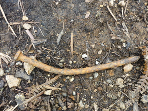

taang 
/taʔaŋ/
n.
rust
Ka taang iyan ka igngaran te egketket te me makehal ne kasangkapan iling te sin, lansang, me putew eyew egkareetan wey egmareet e. Egkeilaan seini su bayew makalawag wey meitem ka batek din ne egketket te minsan nekey ne putew.
Taang ka egpakarereet te ugpit ke kenè layun egkakamanga.
Eng. rust; corrode; tarnish
DDP: Metal (1.2.2.3)
vt.
for something, especially the rain (egtaang, egtetaang, actor, eg><ø-, eg><ø-rdpCV-) to corrode or rust something (egtaangen, theme, eg><en-)
Egketket seini te minsan nekey ne makehal iling te putew.
Kahiyen ku ne immalalab ka atep dan su imbatekan te malalab, kunaleg te intaang bes.
I thought their roof was red because it was painted with red, but rather it is rusted.
Eng. corrode; rust, to; tarnish; oxidize
DDP: Metal (1.2.2.3)
Online dict status: -
Usage level: M
adj.
(taangen, -en) rusty
Taangen e ka ugpit ku ne naluhey kud ka warè nahamit sikan naa ka egkamangeen ku pad.
My bolo that I haven't used for a long time is rusty, that's why I am going to sharpen it.
Eng. rust
DDP: Metal (1.2.2.3)
Online dict status: -
Usage level: R
Updated by: RJH,TME,AAA,QDL,AAA,NJK,QDL,RJH
Last updated: 26/Jan/2010
This page last updated: 28-Dec-2019
Copyright © 2009-2014, Matigsalug Language Christian Association, Inc